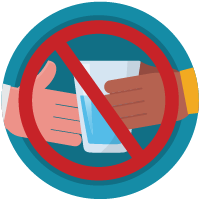

Stay home: People who are mildly ill with COVID-19 are able to
recover at home. Do not leave, except to get medical care. Do
not visit public areas.
Stay in touch with your doctor. Call before you get medical
care. Be sure to get care if you feel worse or you think it is
an emergency.
Avoid public transportation: Avoid using public transportation
like bus train etc.
Separate yourself from other people in your home, this is known as
home isolation
Stay away from others: As much as possible, you should stay
in a specific “sick room” and away from other people in your
home. Use a separate bathroom, if available.
Limit contact with pets & animals: You should restrict
contact with pets and other animals, just like you would
around other people.
Call ahead before visiting your doctor
Call ahead: If you have a medical appointment, call your
doctor’s office or emergency department, and tell them you
have or may have COVID-19. This will help the office protect
themselves and other patients.
Wear a facemask if you are sick
If you are sick: You should wear a facemask when you are
around other people and before you enter a healthcare
provider’s office.
If you are caring for others: If the person who is sick is not
able to wear a facemask , then people who live in the home
should stay in a different room. When caregivers enter the
room of the sick person, they should wear a facemask.
Visitors, other than caregivers, are not recommended.
Cover coughs and sneezes
Cover your mouth and nose with a tissue when you cough or sneeze
or use the inside of your elbow.
Dispose oif used tissues immediateley.If masks are used discard
after the days use
Always wash your hands after you cough with soap and water for 20
secs
Clean your hands often
Wash hands: Wash your hands often with soap and water for at least
20 seconds. This is especially important after blowing your nose,
coughing, or sneezing; going to the bathroom; and before eating or
preparing food.
Hand sanitizer: If soap and water are not available, use an
alcohol-based hand sanitizer with at least 60% alcohol, covering
all surfaces of your hands and rubbing them together until they
feel dry.
Soap and water: Soap and water are the best option, especially if
hands are visibly dirty.
Avoid touching your eyes, nose, and mouth with unwashed hands.
Avoid sharing personal household items

Do not share: Do not share dishes, drinking glasses, cups, eating
utensils, towels, or bedding with other people in your home.
Wash thoroughly after use: After using these items, wash them
thoroughly with soap and water or put in the dishwasher.
Clean all “high-touch” surfaces everyday
Clean high-touch surfaces in your isolation area (“sick room” and
bathroom) every day; let a caregiver clean and disinfect high-touch
surfaces in other areas of the home.
Clean high-touch surfaces in your isolation area (“sick room”
and bathroom) every day; let a caregiver clean and disinfect
high-touch surfaces in other areas of the home.
Household cleaners and disinfectants: Clean the area or item with
soap and water or another detergent if it is dirty. Then, use a
household disinfectant.